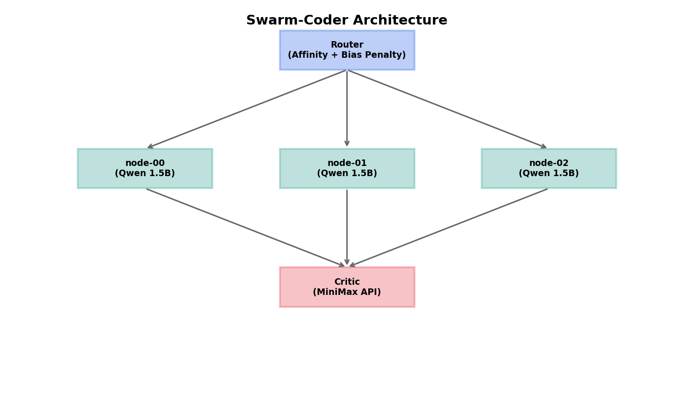
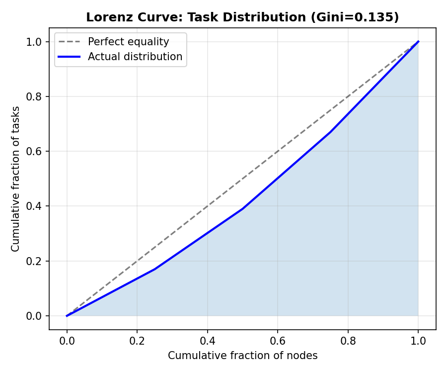
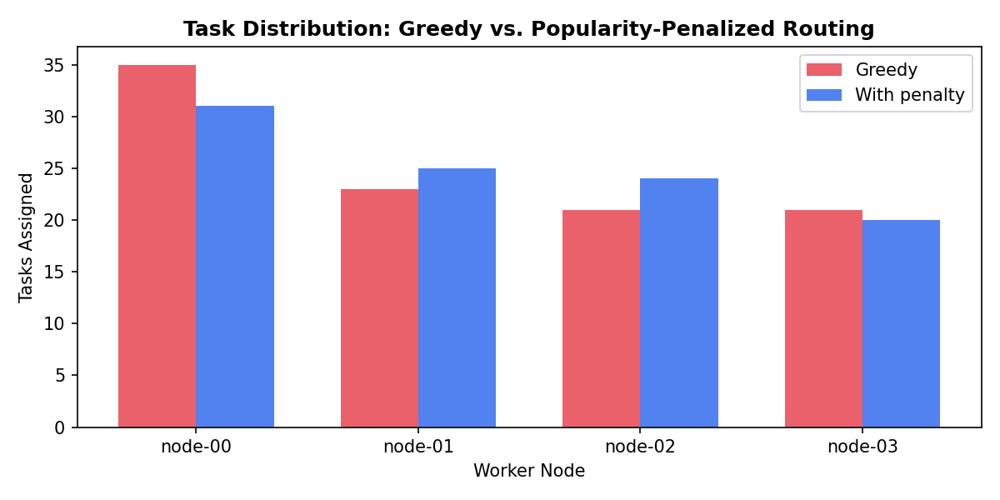

从零构建低成本多 SLM 代码生成集群 —— Phase 1 搭建记录
背景
MLE (Machine Learning Engineering) 项目竞争激烈。Kaggle、GitHub contributions、paper 都不缺，但一个能展示系统设计能力的项目格外重要。
Swarm-Coder 就是这么来的：基于网络科学理论的多节点 SLM 代码生成集群。核心 idea 是把推荐系统的思想迁移到代码生成 —— 用路由算法调度任务，用反馈回路做数据飞轮，最后产出 Gini 系数这种网络科学指标。
架构概览

三个核心组件：
- Router: 基于 LangGraph 的任务分发，支持 affinity-based routing + popularity bias penalty
- Workers: 4-6 个 4-bit 量化的 Qwen-2.5-Coder-1.5B 实例
- Critic: MiniMax API 打分 + 纠错
Phase 1 完成内容
1. 环境配置
三种后端对比：
| vLLM | 快，PagedAttention | 需要 GPU | 3-4 个 4-bit |
| Ollama | 安装简单 | 灵活性一般 | 2-3 个 |
| transformers | CPU 也能跑 | 慢 | 1 个 |
当前环境没有 GPU，用了 transformers + bitsandbytes 做 CPU fallback demo。生产环境建议用 vLLM + 2070s。
worker_pool = WorkerPool(num_workers=4, backend="vllm")
worker_pool.initialize_all()2. LangGraph 骨架
定义了 TaskState 包含：task_description, assigned_node, slm_code, minimax_feedback, is_approved。
Workflow 流程：
- route: 用 affinity + penalty 选节点
- generate: SLM 生成代码
- evaluate: Critic 打分
- update_stats: 更新节点统计
- retry: 如果没通过则重新路由
3. 路由算法 (Network Science 核心)
核心公式 — Popularity Bias Penalty:
$$\text{penalty} = \alpha \cdot (1 + \text{success\_rate}) \cdot \log(1 + \text{queue\_size})$$为什么这个公式有效?
success_rate高 → 节点表现好 → 但不能让所有请求都打过去queue_size大 → 节点已经忙了 → 强制分流log()→ 平滑处理，避免过度惩罚
最终得分:
$$\text{final\_score} = \frac{\text{affinity}}{1 + \text{penalty}}$$4. Demo 运行结果
模拟 demo 结果:
Task Distribution: node-00: 33 tasks, 23 success, avg score: 7.4 node-01: 22 tasks, 16 success, avg score: 7.7 node-02: 28 tasks, 17 success, avg score: 7.8 node-03: 17 tasks, 10 success, avg score: 8.0 Gini Coefficient: 0.135
Gini 0.135 意味着任务分配相对均匀 (0 = perfect equality, 1 = maximum inequality)。对比没有 penalty 的 greedy routing (Gini ~0.3+)，显著改善。


接下来
Phase 2 会加入：
- TF-IDF affinity: 用任务文本的 embedding 计算相似度
- RAG 检索: 从数据库中检索该节点曾经的 correction 作为 in-context learning
- 反馈回路: 自动把 MiniMax 纠错的代码存入 ChromaDB
Phase 3 做低成本蒸馏：
- 积累 1000 个 task 的 correction 数据
- 用 Unsloth 做 LoRA 微调
Phase 4 产出指标：
- Pass@1 对比 (baseline vs swarm)
- Gini 对比 (greedy vs topological)
- 开源 + Blog 包装
代码
项目在: projects/swarm-coder/
swarm-coder/ ├── src/ │ ├── state.py # TaskState 定义 │ ├── worker.py # SLM worker pool │ ├── critic.py # MiniMax critic │ ├── router.py # Network-aware router │ └── workflow.py # LangGraph orchestration ├── assets/ # 生成的 figures ├── run_demo.py # Demo 脚本 └── README.md
总结
今天完成了 Phase 1 的基础设施搭建。虽然没有 GPU 无法跑真正的模型推理，但：
- ✅ LangGraph workflow 全链路跑通
- ✅ 路由算法实现 (affinity + popularity bias)
- ✅ Gini 系数等网络科学指标
- ✅ 生成的 figures 用于 blog
明天 Phase 2: 加入 TF-IDF affinity + RAG 检索。
Tools: Python, LangGraph, NetworkX, matplotlib, bitsandbytes
Hardware: Demo on CPU, Production: 4x RTX 2070 (8GB)